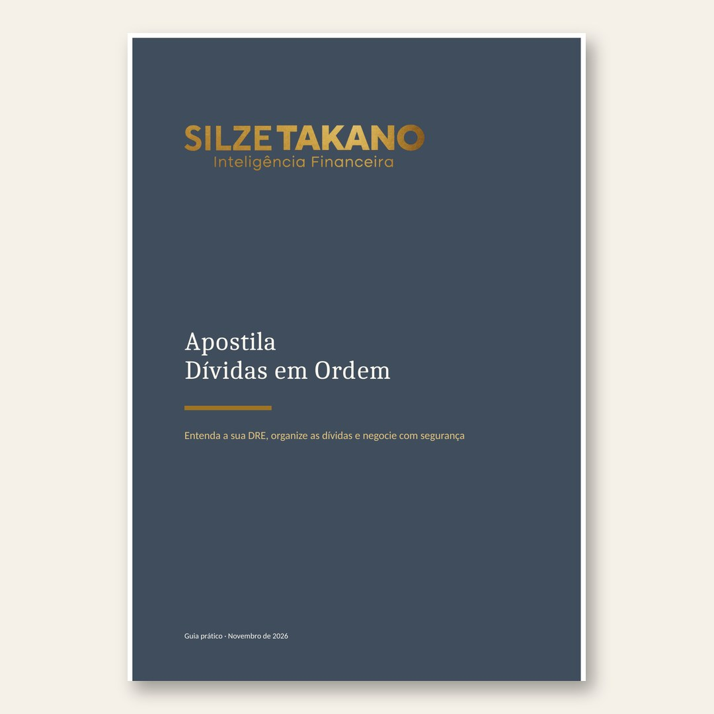

Apostila digital · acesso na hora
Apostila Dívidas em Ordem
O passo a passo que a Silze usa com as clientes, em 7 módulos com exercícios que usam os seus números.
- A sua DRE pessoal e o mapa de todas as dívidas numa tabela só
- Quanto cabe no seu bolso e qual caminho seguir em cada dívida
- 8 modelos de carta e e-mail prontos para negociar com o banco
- Superendividamento e o plano de 30, 60 e 90 dias para não voltar a dever
Garantia de 7 dias. Se não for para você, o valor é devolvido.
Quero a apostila